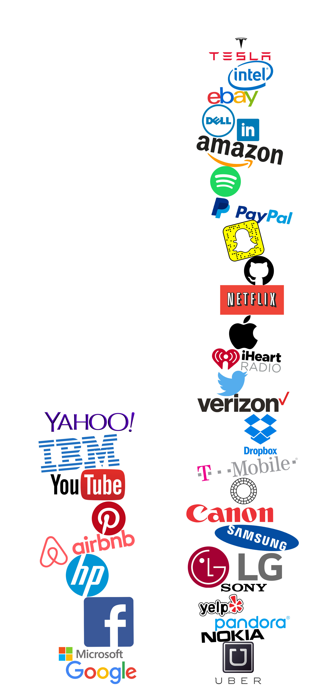

- Digital collage, Photoshop
- The companies in the left "stack" all have either a woman CEO, COO, or CFO whereas the companies in the right "stack" have males holding these positions
- Out of the 35 companies represented in this piece, only 9 are in the right column (9/35=26%)
- CFO and Executive VP of Microsoft
- Previously CFO of Microsoft’s Business Division, overseeing new products and applications such as Microsoft Office 365
- Deeply involved in successful company acquisitions of Skype and Yammer
- http://www.investing.businessweek.wallst.com/research/stocks/people/person.asp?personId=24560154&privcapId=21835